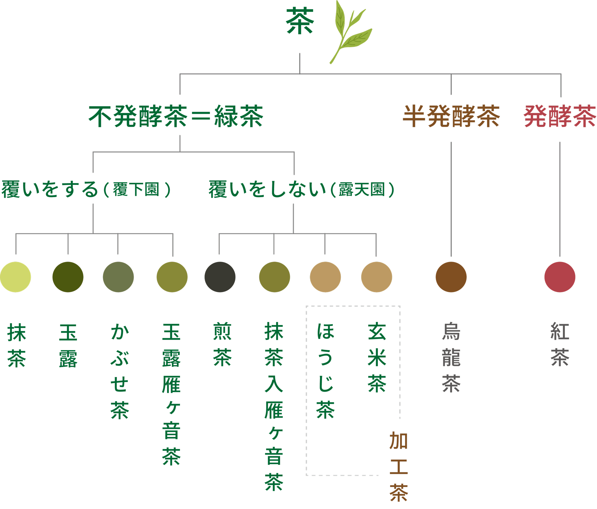

知るほどに楽しい、お茶の多彩な魅力
お茶の種類
知るほどに楽しい、お茶の多彩な魅力
玉露、煎茶、番茶、抹茶など、それぞれの特徴と魅力を紹介します。
気分やシーンに合わせて、様々なお茶の味わいを紹介します。

お茶の淹れ方
お茶の味を引き出す、至福の淹れ方
お茶の種類に合わせた最適な温度と時間で、
最高の一杯を淹れるコツを紹介します。
基本から応用まで、美味しいお茶の淹れ方を
マスターしましょう。
煎茶
冷茶
茶の健康機能
お茶を楽しむ ～お茶の効能～
健康と美、心身を癒すお茶の恵み
リラックス効果、抗酸化作用、ダイエット効果など、お茶の健康効果を紹介します。
日々の生活にお茶を取り入れ、心身ともに健やかな毎日を送りましょう。
| カテキン | 強い抗酸化作用があって、動脈硬化、がん、 高血 圧など最近増えている生活習慣病の予防に効果が あります。 また、 殺菌作用も強く、 口臭予防、 虫 歯予防、食中毒の予防にもなります。 |
|---|---|
| カフェイン | 眠気を飛ばしたり、脳や心臓の働きを活性化する 効果があります。 カフェインは取りすぎると頭痛が 起こり易くなると言われているため、過剰な摂取 には注意が必要です。 |
| テアニン | お茶の葉だけに含まれているアミノ酸で、 心と体をリラックスさせる効果があります。 |
| ビタミンC | がん、風邪の予防に効果があります。 1日に必要なビタミンCの量は大人で約50mg。 お茶10杯分に相当します。 |
| ミネラル | フッ素 亜鉛 マンガンなどのミネラルもお茶に は含まれています。 なかでもフッ素は歯の表面を強くして、 虫歯にならない抵抗力を付ける効果が あります。 |